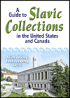

Libraries and Achives for The Third Wave
Russians in America: The Third Wave
Libraries and Archives

Overview
In the course of this project I have visited libraries and archives and spoken with knowledgeable, resourceful and extremely helpful individuals. I am grateful to all of those gracious librarians and archivists below who have made my work more productive and enjoyable. I summarize some of that information below with links to archives, libraries and catalogues, archivists and librarians. Slavic librarians communicate among themselves with a closed list serve SLAVLIBS. They also publish a journal called, Slavic and East European Information Resources. A sneak preview of Volume VII, 1 (2006) is available here.
In 2006 as a special issue of the above journal, Anatol Shmelev (Анатолий Шмелев) of the Hoover Institution Archives published "Russian in the Repositories," SEEIR, VII, 20-3, 2006 pp. 1-8. The issue was also published separately as Tracking a Diaspora: Émigrés from Russia and Eastern Europe in the Repositories. While the volume deals with several interesting collections, it does not claim to be a comprehensive overview. (Список для русских читателей.)
Archival collections at major research centers have helped to preserve the memories that might well otherwise have been lost. This is especially true for the First Wave. The nature of archives, however, is such, that they gather what they can, when they can. Frequently these efforts are hampered by a lack of funds to catalogue, oversee and in some cases acquire invaluable materials. Archives are also spread throughout the United States, and the collections normally need to be viewed locally. Thanks to a Mellon Foundation grant in support of this project I was able to visit the following archives. While the list of materials is not complete, it does point to collections still being processed that will eventually be available to scholars.
American Jewish Historical Society
In addition to a valuable link to internet resources, the AJHS houses at 15 W. 16th Street, NY NY 10011 (212) 246-6080 a set of libraries and archives, including those of the Institute for Jewish Research. (YIVO) .Founded in 1925 in Vilna, Poland (Wilno, Poland; now Vilnius, Lithuania), as the Yiddish Scientific Institute, the YIVO Institute for Jewish Research is dedicated to the history and culture of Ashkenazi Jewry and to its influence in the Americas. Headquartered in New York City since 1940, the YIVO Library contains over 360,000 volumes. The YIVO Archives holds over 22,000,000 documents, photographs, recordings, posters, films, videotapes, and other artifacts. Together, they comprise the world's largest collection of materials related to the history and culture of East European Jewry and the American Jewish immigrant experience. 15 W. 16th Street, NY NY 10011 (212) 246-6080.
In his book A Time for Healing: American Jewry since World War II, Edward S. Shapiro comments that the second wave of Jewish immigrants to America postwar was from the Soviet Union: "Over one hundred thousand Jews from Russia immigrated to America in the 1970's and 1980's. They were, with some exceptions, Russians who happened to be Jews. ...the Russian immigrants of the 1970's and 1980's did not speak Yiddish, knew little of Judaism, and tended to remain aloof from Jewish organizations. ...they perceived being Jewish as a national and not a religio-cultural category." (126). Barry Chiswick in a review of US census data for his article "Soviet Jews in the United States" International Migration Review XXVII, 2 (Summer 1993) notes that between 1901-1910 there were 1,597,306 immigrants form Russia and its territories, dwarfing the numbers for 1971-1980 of 38961, and 1980-1990 of 42,898, although the numbers peaked in the years from 1978-1981. He notes that since most were highly skilled and well-educated, little in the way of social services was required from the government. Rather support flowed mainly from Jewish relief organizations.
The Center for Russian Culture at Amherst College
The Amherst Center for Russian Culture contains three archives that are of significant interest: Roman Goul (Роман Гуль), longtime editor of the Новый Журнал and author of several books under the title Я унес Россию; Emanuel (Edward) Sztein (Эдуард Штейн ) an avid collector and scholar of the period; and Grigori Poliak (Григорий Польяк) who did phone interviews with Russian writers and directed the "Silver Age" publishing house. (The cassettes still exist, but first attempts to digitize them to CD format were not successful). [This latter collection is still being catalogued and is not yet open for use]. For access contact Professor Stanley Rabinowitz.
The Bakmeteff Archive at Columbia University
Of special interest to scholars of the Third Wave is the collection of Mark Popovsky. Here are located original questionnaires sent to over 100 Russian writers in America in 1992 and their replies. The archive has also acquired the still uncatalogued papers of Igor Efimov (Игорь Ефимов) of Hermitage Publishing. For information contact the curator, Tanya Chebotarev (Таня Чеботарёва).
The Columbia University Library also has extensive holdings of Russian materials. Contact Jared Ingersoll (ingersoll@columbia.edu) 2121 854-4701.
Harvard University
Harvard remains the premier private institution in the United States when it comes to collecting Russian language books and periodicals. Often a search of the Harvard catalogue can reveal the true extent of holdings in the United States. They too have assembled an online research guide for Slavic students and scholars. Brad Schaffner, Head of he Slavic Division in Widener Library noted that the library was currently working on digitizing materials from the first survey of Russian immigrants done art Harvard in the 1950s. (Information on the Soviet Interview Project done in the 1980s can be found at the University of Illinois).
The Hoover Institute and Stanford University
The Hoover Institute is located at Stanford University. The collection of Russian materials is enormous. Most recently they have acquired and are cataloguing the archives of Radio Free Europe and Radio Liberty. This collection of over 10,000,000 items contains a card catalogue of alphabetical listings of those who participated in broadcasts, the actual program scripts and recordings. Contact Anatol Shmelev. There are also the papers of Aleksandr Ginzburg (Александр Гинзбург) and Andrei Sinyavsky (Андрей Синявский).
Not to be forgotten is a valuable collection of material at the Green Library at Stanford. Contact Karen Rondestvedt. Karen also edits Slavic and East European Information Resources.
The Library of Congress
Russian publishers in the West should have provided copies of their works to the Library of Congress. Many did and the catalogue here is good starting place for holdings of Russian materials in the United States. The LOC also oversaw the microfilming of Russian language newspapers. Several of the experts of the European Division on Staff include Slavisists David Arans and Howard Leich.
Middlebury College
Since 1945 Middlebury College has hosted along with its other language schools, the Russian School. The first director, Mischa Fayer, attracted to the college each summer some of the brightest Russian scholars in the United States to come to Vermont each summer for six weeks, where since all students promised to speak only Russian, a community of Russia in Vermont was created, with plays, song fests, poetry readings, all accompanied by a serious academic program. In 1969 the directorship was assumed by Professor Robert Baker until 1982 when Professor David Bethea assumed the role. The Russian School attracted publishers and writers as well as scholars who taught for the entire six weeks. The list is long. Unfortunately the historical and archival record of the times is minimal. Middlebury competed in friendly fashion with an alternative Russian School at Norwich University in Vermont. The differences in the 1970s and 1980s were real. Middlebury was known for an intensive and rigorous and stressful academic environment, and because it was the only American college with a direct program for students to study in the Soviet Union it was concerned with maintaining good relations with the Soviet Union and invited Soviet teachers to its campus. Norwich involved a family like Russian "душа" and eagerly sought out and welcomed emigres including on at least one occasion Aleksandr Solzhenitsyn. The Middlebury Russian School hosted on different occasions in the 1970s and 1980s V. Aksyonov and I. Brodsky, V. Frumkin (В. Фрумкин), E. Sztein (Е. Штейн), as well as members of earlier emigrations, Nina Berberova (Нина Берберова), Ivan Elagin (Иван Елагин),Yuri Ivask (Юрий Иваск) and Leonid Rzhevsky (Леонид Ржевский). Unfortunately audio tapes made of those lectures and readings appear to have been lost. The archives do contain programs of the past fifty summers with valuable information of faculty participants.
The National Archives (The United States National Archives and Records Administration) has materials from the United States Information Agency which produced The Voice of America.
The New York Public Library
The Slavic and Baltic Division division under the direction of Edward Kasinec continues to maintain one of the finest collections of Russian books, periodicals and archival materials in the world. Of particular note is the acquisition of the Vladimir Nabokov archives. Its own website set of links to other collections is equally invaluable as a starting point. Robert H. Davies, Jr. in his Slavic and Baltic Resources at the NYPL (NY: 1994), recalls the New York City fiscal crisis of the 1970s. "While the years from 1976 to 1984 saw improvements in technical-processing work flow through the expansion of on-line cataloging... NYPL book budgets contracted further. The Serials Reduction project, for example, cut the number of current, primarily vernacular language periodical subscriptions in the Slavic and Baltic Division from 1,513 in 1978 to 982 in 1981." Thus at the very time the Russian émigré press was expanding its capacities, the major New York City library was decreasing its acquisitions of such materials. (71).
Norwich University
For three decades Norwich University hosted a Russian School that attracted students every summer to the Vermont campus where they interacted with Russians who taught them language, literature and culture. Each summer a symposium attracted many Russian figures in the West. The Kreitzberg Library houses archives and signed copies of books by visitors such as Aleksandr Solzhenitsyn.
The Russian School at Norwich University opened in 1968 and continued until 2000. It was the successor to the Russian Language Summer Institute at Windham College (now Landmark College in Putney Vermont) begun in 1960 by Marianna Poltorattzsky (Марианна Полторацкая, who herself had taught previously at Middlebury Russian School). Each summer Norwich sponsored a Symposium which attracted scholars and writers to its campus. As early as 1977 the symposium addressed the topic of Contemporary Russian Literature Outside the USSR. Naum Korzhavin (Наум Коржавин) served for many years as poet in residence. Iskander (Искандер), Viktor Nekrasov (Виктор Некрасов), and Okudzhave (Окуджава) all served for a time as artists in residence.
A 1983 Symposium on Contemporary Russian literature in Exile attracted the following writers; Askyonov, Losev, E. Sztein, Juz Aleshkvoskij (Юз Алешковский), I. Elagin (И. Елагин), I. Chinnov (И. Чиннов), Yu. Ivask (Ю. Иваск), V. Sinkevich (В. Синкевич), I. Efimov (И. Ефимов), A. Ktotova (А. Ктотова), A. Sedyx (А. Седых), N. Pervushin (Н. Первушин), V. Filipp (В. Филипп), N. Korzhavin (Н. Коржавин), M. Morgulis (М. Моргулис), V. Nekrasov (В. Некрасов), and L. Rzhevsky (Л. Ржевский).
With the closing of Norwich's Russian School in 2000, many of its faculty and traditions were transferred to Middlebury's Russian School that now represents a combination of the best of both those worlds and where every summer Russian is heard in the classrooms, dormitories, cafeteria, concert halls and theaters. A curious footnote to Vermont. Vladimir Nabokov's novel, Pnin, describes a Russian professor making his way to Vermont. Vasily Aksyonov's In Search of Melancholy Baby, is dated Vermont 1984, Paris 1985.Forschungsstelle Ost Europa at University of Bremen.
Under the leadership of Garik Superfin (Гарик Суперфин) the finest collection of Samizdat materials can be found at the University of Bremen. Here is a preliminary list of the holdings, and notes on using the catalogue. A printed version is expected for the fall of 2007.
The University of California Berkeley
UC Berkeley has an excellent collection of Slavic materials and permits hands on access to newspapers such as Новая Газета. Allan Urbanic has compiled some of the most invaluable bibliographic guides to the waves of emigrations, i.e. Russian Émigré Serials: a bibliography of titles held by the University of California, Berkeley (1989) and Russian Émigré Literature : a bibliography of titles held by the University of California, Berkeley. 1993. They too should be consulted. Their research guide is here.
The University of Illinois at Urbana-Champaign
American scholars are familiar with the outstanding collection and professionals at the Slavic Library at the University of Illinois in Urbana-Champaign. Each summer a Research Laboratory with support for scholars is held at the library. In addition to their excellent ability and willingness to reply to all queries through the Slavic Reference Service, the librarians have assembled an extremely useful introduction to the study of Russian émigrés on the Internet. I am indebted to Helen Sullivan and Miranda Remnek for their assistance.
The University of Michigan
The Center for Russian and East European Studies at the University of Michigan was once home to the Proffers and to Joseph Brodsky. The Special Collections Library contains valuable papers of Carl Proffer, founder and editor along with his wife Ellendea Proffer (now Teasley) of Ardis and the Russian Literature Triquarterly. The role of the Proffers in the 1970s in almost single-handedly reaching out to the voices of Russian literature cannot be exaggerated. Ardis published hundreds of volumes. Many have entered the glorious pages of the history of Russian literature and its classics. For further information contact Janet Crayne, Head of the Slavic and East European Division.
The University of North Carolina at Chapel Hill
Recently the University acquired the Andre Savin collection, with more than 10000 items including periodicals that help to document Russian emigrations. They are in the process of providing a digital database to research the Russian emigration using the collection.
Yale University
The Beinecke Rare Book and Manuscript Collection houses many important Slavic related collections including perhaps the single most important collection of the Third Wave in America, the Joseph Brodsky archive. This is still being processed and scholars should call ahead. There are also valuable collections of materials by Nina Berberova (Нина Берберова), Boris Fillipov (Борис Филлипов), Roman Goul (Роман Гуль), George Ivask. Contact the Curator Kevin Repp.
Several other American universities and libraries are well known centers for the study of Russian language, literature and culture. At some time I hope to examine more closely their resources. I list here some, but not all, of those programs: The Ohio State University, the Universities of California at Los Angeles (UCLA), Indiana, Kansas, Pittsburgh, Southern California, Texas, and Wisconsin
Private collections
Many of the participants or family members still survive and live in the United States. They are first and foremost living witnesses and their memoirs spoken or written deserve special attention. In addition, efforts need to be made to connect these individuals with those institutions that can best protect the legacy that is rightfully theirs. These include Valery Chalidze (Валерий Чалидзе), Elena Dovlatova (Елена Довлатова), Aleksandr Genis (Александр Генис), Yuz Aleshkovsky (Юз Алешковский), Lev Loseff (Лев Лосев), Aleksandr Glezer (Александр Глезер), Maria Temkina (Мария Темкина), Evgeny Rubin (Евгений Рубин), Evgeny Lubin (Евгений Любин) and dozens of others. Many returned to Russia, such as Aleksandr Solzhenitsyn and Eduard Limonov. Still other have scattered internationally, Vasily Aksyonov (Василий Аксенов), Sasha Sokolov (Саша Соколов), Peter Vail (Петр Вайль). The challenge is great, but the risk that valuable records might be lost forever in coming generations is greater still.
Who, What, Where and When?
Internet Links
Другие Ссылки